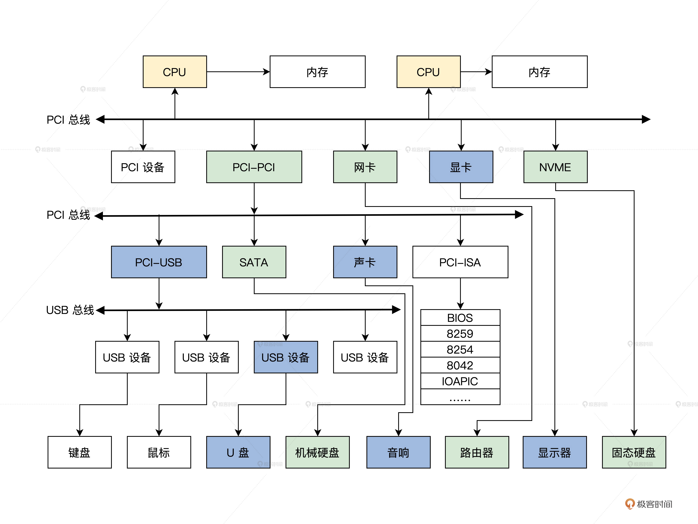

- 00 开篇词 为什么要学写一个操作系统？.md.html
- 00 编辑手记 升级认知，迭代自己的操作系统.md.html
- 01 程序的运行过程：从代码到机器运行.md.html
- 02 几行汇编几行C：实现一个最简单的内核.md.html
- 03 黑盒之中有什么：内核结构与设计.md.html
- 04 震撼的Linux全景图：业界成熟的内核架构长什么样？.md.html
- 05 CPU工作模式：执行程序的三种模式.md.html
- 06 虚幻与真实：程序中的地址如何转换？.md.html
- 07 Cache与内存：程序放在哪儿？.md.html
- 08 锁：并发操作中，解决数据同步的四种方法.md.html
- 09 瞧一瞧Linux：Linux的自旋锁和信号量如何实现？.md.html
- 10 设置工作模式与环境（上）：建立计算机.md.html
- 11 设置工作模式与环境（中）：建造二级引导器.md.html
- 12 设置工作模式与环境（下）：探查和收集信息.md.html
- 13 第一个C函数：如何实现板级初始化？.md.html
- 14 Linux初始化（上）：GRUB与vmlinuz的结构.md.html
- 15 Linux初始化（下）：从_start到第一个进程.md.html
- 16 划分土地（上）：如何划分与组织内存？.md.html
- 17 划分土地（中）：如何实现内存页面初始化？.md.html
- 18 划分土地（下）：如何实现内存页的分配与释放？.md.html
- 19 土地不能浪费：如何管理内存对象？.md.html
- 20 土地需求扩大与保障：如何表示虚拟内存？.md.html
- 21 土地需求扩大与保障：如何分配和释放虚拟内存？.md.html
- 22 瞧一瞧Linux：伙伴系统如何分配内存？.md.html
- 23 瞧一瞧Linux：SLAB如何分配内存？.md.html
- 24 活动的描述：到底什么是进程？.md.html
- 25 多个活动要安排（上）：多进程如何调度？.md.html
- 26 多个活动要安排（下）：如何实现进程的等待与唤醒机制？.md.html
- 27 瞧一瞧Linux：Linux如何实现进程与进程调度_.md.html
- 28 部门分类：如何表示设备类型与设备驱动？.md.html
- 29 部门建立：如何在内核中注册设备？.md.html
- 30 部门响应：设备如何处理内核I_O包？.md.html
- 31 瞧一瞧Linux：如何获取所有设备信息？.md.html
- 32 仓库结构：如何组织文件_.md.html
- 33 仓库划分：文件系统的格式化操作.md.html
- 34 仓库管理：如何实现文件的六大基本操作？.md.html
- 35 瞧一瞧Linux：虚拟文件系统如何管理文件？.md.html
- 36 从URL到网卡：如何全局观察网络数据流动？.md.html
- 37 从内核到应用：网络数据在内核中如何流转.md.html
- 38 从单排到团战：详解操作系统的宏观网络架构.md.html
- 39 瞧一瞧Linux：详解socket实现与网络编程接口.md.html
- 40 瞧一瞧Linux：详解socket的接口实现.md.html
- 41 服务接口：如何搭建沟通桥梁？.md.html
- 42 瞧一瞧Linux：如何实现系统API？.md.html
- 43 虚拟机内核：KVM是什么？.md.html
- 44 容器：如何理解容器的实现机制？.md.html
- 45 ARM新宠：苹果的M1芯片因何而快？.md.html
- 46 AArch64体系：ARM最新编程架构模型剖析.md.html
- LMOS来信：第二季课程带你“手撕”计算机基础.md.html
- 大咖助场 以无法为有法，以无限为有限.md.html
- 用户故事 yiyang：我的上机实验“爬坑指南”.md.html
- 用户故事 成为面向“知识库”的工程师.md.html
- 用户故事 技术人如何做选择，路才越走越宽？.md.html
- 用户故事 操作系统发烧友：看不懂？因为你没动手.md.html
- 用户故事 用好动态调试，助力课程学习.md.html
- 用户故事 艾同学：路虽远，行则将至.md.html
- 结束语 生活可以一地鸡毛，但操作系统却是心中的光.md.html
- 捐赠
28 部门分类：如何表示设备类型与设备驱动？
你好，我是LMOS。
小到公司，大到国家，都有各种下属部门，比如我们国家现在有教育部、科学技术部、外交部，财政部等，这些部门各自负责完成不同的职能工作，如教育部负责教育事业和语言文字工作，科学技术部负责推动解决经济社会发展的重大科技问题。
既然大道相通，那我们的Cosmos中是否也是类似这样的结构呢？
答案是肯定的，在前面的课中，我们搞定了内存管理和进程管理，它们是内核不可分隔的，但是计算机中还有各种类型的设备需要管理。
我们的Cosmos也会“成立各类部门”，用于管理众多设备，一个部门负责一类设备。具体要怎么管理设备呢？你不妨带着这个问题，正式开始今天的学习！
这节课的代码，你可以从这里下载。
计算机的结构
不知道你是否和我一样，经常把计算机的机箱打开，看看 CPU，看看内存条，看看显卡，看看主板上的各种芯片。
其实，这些芯片并非独立存在，而是以总线为基础连接在一起的，各自完成自己的工作，又能互相打配合，共同实现用户要求的功能。
为了帮你理清它们的连接关系，我为你画了一幅图，如下所示。

上图是一个典型的桌面系统，你先不用管是物理上怎么样连接的，逻辑上就是这样的。实际可能比图中有更多或者更少的总线。但是总线有层级关系，各种设备通过总线相连。这里我们只需要记住，计算机中有很多种类的设备，脑中有刚才这幅图就行了。
如何管理设备
在前面的课程中，我们实现了管理内存和进程，其实进程从正面看它是管理应用程序的，反过来看它也是管理CPU的，它能使CPU的使用率达到最高。
管理内存和管理CPU是操作系统最核心的部分，但是这还不够，因为计算机不止有CPU，还有各种设备。
如果把计算机内部所有的设备和数据都描述成资源，操作系统内核无疑是这些资源的管理者。既然设备也是一种资源，如何高效管理它们，以便提供给应用进程使用和操作，就是操作系统内核的重要任务。
分权而治
一个国家之所以有那么多部门，就是要把管理工作分开，专权专职专责，对于操作系统也是一样。
现代计算机早已不限于只处理计算任务，它还可以呈现图像、音频，和远程计算机通信，储存大量数据，以及和用户交互。所以，计算机内部需要处理图像、音频、网络、储存、交互的设备。这从上面的图中也可以看得出来。
操作系统内核要控制这些设备，就要包含每个设备的控制代码。如果操作系统内核被设计为通用可移植的内核，那是相当可怕的。试想一下，这个世界上有如此多的设备，操作系统内核代码得多庞大，越庞大就越危险，因为其中一行代码有问题，整个操作系统就崩溃了。
可是仅仅只有这些问题吗？当然不是，我们还要考虑到后面这几点。
1.操作系统内核开发人员，不可能罗列世界上所有的设备，并为其写一套控制代码。
2.为了商业目的，有很多设备厂商并不愿意公开设备的编程细节。就算内核开发人员想为其写控制代码，实际也不可行。
3.如果设备更新换代，就要重写设备的控制代码，然后重新编译操作系统内核，这样的话操作很麻烦，操作系统内核开发人员和用户都可能受不了。
以上三点，足于证明这种方案根本不可取。
既然操作系统内核无法包含所有的设备控制代码，那就索性不包含，或者只包含最基本、最通用的设备控制代码。这样操作系统内核就可以非常通用，非常精巧。
但是要控制设备就必须要有设备的相关控制代码才行，所以我们要把设备控制代码独立出来，与操作系统内核分开、独立开发，设备控制代码可由设备厂商人员开发。
每个设备对应一个设备控制代码模块，操作系统内核要控制哪个设备，就加载相应的设备代码模块，以后不使用这个设备了，就可以删除对应的设备控制代码模块。
这种方式，给操作系统内核带来了巨大的灵活性。设备厂商在发布新设备时，只要随之发布一个与此相关的设备控制代码模块就行了。
设备分类
要想管理设备，先要对其分门别类，在开始分类之前，你不妨先思考一个问题：操作系统内核所感知的设备，一定要与物理设备一一对应吗？
举个例子，储存设备，其实不管它是机械硬盘，还是TF卡，或者是一个设备控制代码模块，它向操作系统内核表明它是储存设备，但它完全有可能分配一块内存空间来储存数据，不必访问真正的储存设备。所以，操作系统内核所感知的设备，并不需要和物理设备对应，这取决于设备控制代码自身的行为。
操作系统内核所定义的设备，可称为内核设备或者逻辑设备，其实这只是对物理计算平台中几种类型设备的一种抽象。下面，我们在cosmos/include/knlinc/krldevice_t.h文件中对设备进行分类定义，代码如下。
#define NOT_DEVICE 0 //不表示任何设备
#define BRIDGE_DEVICE 4 //总线桥接器设备
#define CPUCORE_DEVICE 5 //CPU设备，CPU也是设备
#define RAMCONTER_DEVICE 6 //内存控制器设备
#define RAM_DEVICE 7 //内存设备
#define USBHOSTCONTER_DEVICE 8 //USB主控制设备
#define INTUPTCONTER_DEVICE 9 //中断控制器设备
#define DMA_DEVICE 10 //DMA设备
#define CLOCKPOWER_DEVICE 11 //时钟电源设备
#define LCDCONTER_DEVICE 12 //LCD控制器设备
#define NANDFLASH_DEVICE 13 //nandflash设备
#define CAMERA_DEVICE 14 //摄像头设备
#define UART_DEVICE 15 //串口设备
#define TIMER_DEVICE 16 //定时器设备
#define USB_DEVICE 17 //USB设备
#define WATCHDOG_DEVICE 18 //看门狗设备
#define RTC_DEVICE 22 //实时时钟设备
#define SD_DEVICE 25 //SD卡设备
#define AUDIO_DEVICE 26 //音频设备
#define TOUCH_DEVICE 27 //触控设备
#define NETWORK_DEVICE 28 //网络设备
#define VIR_DEVICE 29 //虚拟设备
#define FILESYS_DEVICE 30 //文件系统设备
#define SYSTICK_DEVICE 31 //系统TICK设备
#define UNKNOWN_DEVICE 32 //未知设备，也是设备
#define HD_DEVICE 33 //硬盘设备
上面定义的这些类型的设备，都是Cosmos内核抽象出来的逻辑设备，例如NETWORK_DEVICE网络设备，不管它是有线网卡还是无线网卡，或者是设备控制代码虚拟出来的虚拟网卡。Cosmos内核都将认为它是一个网络设备，这就是设备的抽象，这样有利于我们灵活、简便管理设备。
设备驱动
刚才我们解决了设备分类，下面我来研究如何实现分权而治，就是把操作每个设备的相关代码独立出来，这种方式在业界有一个更专业的名字——设备驱动程序。同时在下面的内容中，我们将不区分设备驱动程序和驱动程序。
这种“分权而治”的方式，给操作系统内核带了灵活性、可扩展性……可是也带来了新的问题，有哪些问题呢？
首先是操作系统内核如何表示多个设备与驱动的存在？然后，还有如何组织多个设备和多个驱动程序的问题，最后我们还得考虑应该让驱动程序提供一些什么支持。下面我们分别解决这些问题。
设备
你能说说一个设备包含哪些信息吗？无非是设备类型，设备名称，设备状态，设备id，设备的驱动程序等。
我们把这些信息归纳成一个数据结构，在操作系统内核建立这个数据结构的实例变量，这个设备数据结构的实例变量，一旦建立，就表示操作系统内核中存在一个逻辑设备了。
我们接下来就一起整理一下设备的信息，然后把它们变成一个数据结构，代码如下。
typedef struct s_DEVID
{
uint_t dev_mtype;//设备类型号
uint_t dev_stype; //设备子类型号
uint_t dev_nr; //设备序号
}devid_t;
typedef struct s_DEVICE
{
list_h_t dev_list;//设备链表
list_h_t dev_indrvlst; //设备在驱动程序数据结构中对应的挂载链表
list_h_t dev_intbllst; //设备在设备表数据结构中对应的挂载链表
spinlock_t dev_lock; //设备自旋锁
uint_t dev_count; //设备计数
sem_t dev_sem; //设备信号量
uint_t dev_stus; //设备状态
uint_t dev_flgs; //设备标志
devid_t dev_id; //设备ID
uint_t dev_intlnenr; //设备中断服务例程的个数
list_h_t dev_intserlst; //设备中断服务例程的链表
list_h_t dev_rqlist; //对设备的请求服务链表
uint_t dev_rqlnr; //对设备的请求服务个数
sem_t dev_waitints; //用于等待设备的信号量
struct s_DRIVER* dev_drv; //设备对应的驱动程序数据结构的指针
void* dev_attrb; //设备属性指针
void* dev_privdata; //设备私有数据指针
void* dev_userdata;//将来扩展所用
void* dev_extdata;//将来扩展所用
char_t* dev_name; //设备名
}device_t;
设备的信息比较多，大多是用于组织设备的。这里的设备ID结构十分重要，它表示设备的类型、设备号，子设备号是为了解决多个相同设备的，还有一个指向设备驱动程序的指针，这是用于访问设备时调用设备驱动程序的，只要有人建立了一个设备结构的实例变量，内核就能感知到一个设备存在了。
至于是谁建立了设备结构的实例变量，这个问题我们接着探索。
驱动
操作系统内核和应用程序都不会主动建立设备，那么谁来建立设备呢？当然是控制设备的代码，也就是我们常说的驱动程序。
那么驱动程序如何表示呢，换句话说，操作系统内核是如何感知到一个驱动程序的存在呢？
根据前面的经验，我们还是要定义一个数据结构来表示一个驱动程序，数据结构中应该包含驱动程序名，驱动程序ID，驱动程序所管理的设备，最重要的是完成功能设备相关功能的函数，下面我们来定义它，代码如下。
typedef struct s_DRIVER
{
spinlock_t drv_lock; //保护驱动程序数据结构的自旋锁
list_h_t drv_list;//挂载驱动程序数据结构的链表
uint_t drv_stuts; //驱动程序的相关状态
uint_t drv_flg; //驱动程序的相关标志
uint_t drv_id; //驱动程序ID
uint_t drv_count; //驱动程序的计数器
sem_t drv_sem; //驱动程序的信号量
void* drv_safedsc; //驱动程序的安全体
void* drv_attrb; //LMOSEM内核要求的驱动程序属性体
void* drv_privdata; //驱动程序私有数据的指针
drivcallfun_t drv_dipfun[IOIF_CODE_MAX]; //驱动程序功能派发函数指针数组
list_h_t drv_alldevlist; //挂载驱动程序所管理的所有设备的链表
drventyexit_t drv_entry; //驱动程序的入口函数指针
drventyexit_t drv_exit; //驱动程序的退出函数指针
void* drv_userdata;//用于将来扩展
void* drv_extdata; //用于将来扩展
char_t* drv_name; //驱动程序的名字
}driver_t;
上述代码，你应该很容易看懂。Cosmos内核每加载一个驱动程序模块，就会自动分配一个驱动程序数据结构并且将其实例化。
而Cosmos内核在首次启动驱动程序时，就会调用这个驱动程序的入口点函数，在这个函数中驱动程序会分配一个设备数据结构，并用相关的信息将其实例化，比如填写正确的设备类型、设备ID号、设备名称等。
Cosmos内核负责建立驱动数据结构，而驱动程序又建立了设备数据结构，这一来二去，就形成了一个驱动程序与Cosmos内核“握手”的动作。
设备驱动的组织
有了设备、驱动，我们下面探索一下怎么合理的组织好它们。
组织它们要解决的问题，就是在哪里安放驱动。然后我们还要想好怎么找到它们，下面我们用一个叫做设备表的数据结构，来组织这些驱动程序数据结构和设备数据结构。
这个结构我已经帮你定义好了，如下所示。
#define DEVICE_MAX 34
typedef struct s_DEVTLST
{
uint_t dtl_type;//设备类型
uint_t dtl_nr;//设备计数
list_h_t dtl_list;//挂载设备device_t结构的链表
}devtlst_t;
typedef struct s_DEVTABLE
{
list_h_t devt_list; //设备表自身的链表
spinlock_t devt_lock; //设备表自旋锁
list_h_t devt_devlist; //全局设备链表
list_h_t devt_drvlist; //全局驱动程序链表，驱动程序不需要分类，一个链表就行
uint_t devt_devnr; //全局设备计数
uint_t devt_drvnr; //全局驱动程序计数
devtlst_t devt_devclsl[DEVICE_MAX]; //分类存放设备数据结构的devtlst_t结构数组
}devtable_t;
在这段代码的devtable_t结构中，devtlst_t是每个设备类型一个，表示一类设备，但每一类可能有多个设备，所以在devtlst_t结构中，有一个设备计数和设备链表。而你可能想到Cosmos中肯定要定义一个devtable_t结构的全局变量，代码如下。
//在 cosmos/kernel/krlglobal.c文件中
KRL_DEFGLOB_VARIABLE(devtable_t,osdevtable);
//在 cosmos/kernel/krldevice.c文件中
void devtlst_t_init(devtlst_t *initp, uint_t dtype)
{
initp->dtl_type = dtype;//设置设备类型 initp->dtl_nr = 0;
list_init(&initp->dtl_list);
return;
}
void devtable_t_init(devtable_t *initp)
{
list_init(&initp->devt_list);
krlspinlock_init(&initp->devt_lock);
list_init(&initp->devt_devlist);
list_init(&initp->devt_drvlist);
initp->devt_devnr = 0;
initp->devt_drvnr = 0;
for (uint_t t = 0; t < DEVICE_MAX; t++)
{//初始化设备链表
devtlst_t_init(&initp->devt_devclsl[t], t);
}
return;
}
void init_krldevice()
{
devtable_t_init(&osdevtable);//初始化系统全局设备表
return;
}
//在 cosmos/kernel/krlinit.c文件中
void init_krl()
{
init_krlmm();
init_krldevice();
//记住一定要在初始化调度器之前，初始化设备表
init_krlsched();
init_krlcpuidle();
return;
}
上面的设备表的初始化代码已经写好了，如果你大脑中没有设备驱动组织图，可能脑子里还是有点乱，所以我来帮你画一幅图，如下所示。

上图看似复杂，实则简单，我帮你理一下重点：首先devtable_t结构中能找到所有的设备和驱动，然后从设备能找到对应的驱动，从驱动也能找到其管理的所有设备 ，最后就能实现一个驱动管理多个设备。
驱动程序功能
我们还有一个问题需要解决，那就是驱动程序，究竟要为操作系统内核提供哪些最基本的功能支持？
我们已经知道了，写驱动程序就是为了操控相应的设备，所以这得看大多数设备能完成什么功能了。现代计算机的设备无非就是可以输入数据、处理数据、输出数据，然后完成一些特殊的功能。
当然，现代计算机的设备很多，能耗是个严重的问题，所以操作系统内核应该能控制设备能耗。下面我来帮你归纳一下用来驱动程序的几种主要函数，如下。
//驱动程序入口和退出函数
drvstus_t device_entry(driver_t* drvp,uint_t val,void* p);
drvstus_t device_exit(driver_t* drvp,uint_t val,void* p);
//设备中断处理函数
drvstus_t device_handle(uint_t ift_nr,void* devp,void* sframe);
//打开、关闭设备函数
drvstus_t device_open(device_t* devp,void* iopack);
drvstus_t device_close(device_t* devp,void* iopack);
//读、写设备数据函数
drvstus_t device_read(device_t* devp,void* iopack);
drvstus_t device_write(device_t* devp,void* iopack);
//调整读写设备数据位置函数
drvstus_t device_lseek(device_t* devp,void* iopack);
//控制设备函数
drvstus_t device_ioctrl(device_t* devp,void* iopack);
//开启、停止设备函数
drvstus_t device_dev_start(device_t* devp,void* iopack);
drvstus_t device_dev_stop(device_t* devp,void* iopack);
//设置设备电源函数
drvstus_t device_set_powerstus(device_t* devp,void* iopack);
//枚举设备函数
drvstus_t device_enum_dev(device_t* devp,void* iopack);
//刷新设备缓存函数
drvstus_t device_flush(device_t* devp,void* iopack);
//设备关机函数
drvstus_t device_shutdown(device_t* devp,void* iopack);
如上所述，我们可以把每一个操作定义成一个函数，让驱动程序实现这些函数。函数名你可以随便写，但是函数的形式却不能改变，这是操作系统内核与驱动程序沟通的桥梁。当然有很多设备本身并不支持这么多操作，例如时钟设备，驱动程序就不必实现相应的操作。
那么这些函数如何和操作系统内核关联起来呢？还记得driver_t结构中那个函数指针数组吗，如下所示。
#define IOIF_CODE_OPEN 0 //对应于open操作
#define IOIF_CODE_CLOSE 1 //对应于close操作
#define IOIF_CODE_READ 2 //对应于read操作
#define IOIF_CODE_WRITE 3 //对应于write操作
#define IOIF_CODE_LSEEK 4 //对应于lseek操作
#define IOIF_CODE_IOCTRL 5 //对应于ioctrl操作
#define IOIF_CODE_DEV_START 6 //对应于start操作
#define IOIF_CODE_DEV_STOP 7 //对应于stop操作
#define IOIF_CODE_SET_POWERSTUS 8 //对应于powerstus操作
#define IOIF_CODE_ENUM_DEV 9 //对应于enum操作
#define IOIF_CODE_FLUSH 10 //对应于flush操作
#define IOIF_CODE_SHUTDOWN 11 //对应于shutdown操作
#define IOIF_CODE_MAX 12 //最大功能码
//驱动程序分派函数指针类型
typedef drvstus_t (*drivcallfun_t)(device_t*,void*);
//驱动程序入口、退出函数指针类型
typedef drvstus_t (*drventyexit_t)(struct s_DRIVER*,uint_t,void*);
typedef struct s_DRIVER
{
//……
drivcallfun_t drv_dipfun[IOIF_CODE_MAX];//驱动程序分派函数指针数组。
list_h_t drv_alldevlist;//驱动所管理的所有设备。
drventyexit_t drv_entry;
drventyexit_t drv_exit;
//……
}driver_t;
看到这里，你是不是明白了？driver_t结构中的drv_dipfun函数指针数组，正是存放上述那12个驱动程序函数的指针。这样操作系统内核就能通过driver_t结构，调用到对应的驱动程序函数操作对应的设备了。
重点回顾
现在，我们搞明白了一个典型计算机的结构，里面有很多设备，需要操作系统合理地管理，而操作系统通过加载驱动程序来管理和使用设备，并为此提供了一系列的机制，这也是我们这节课的重点。
1.计算机结构，我们通过了解一个典型的计算机系统结构，明白了设备的多样性。然后我们对设备做了抽象分类，采用分权而治的方式，让操作系统通过驱动程序来管理设备，同时又能保证操作系统和驱动程序分离，达到操作系统和设备解耦的目的。
2.归纳整理设备和设备驱动的信息，抽象两个对应的数据结构，这两个数据结构在内存中的实例变量就代表一个设备和对应的驱动。然后，我们通过设备表结构组织了驱动和设备的数据结构。
3.驱动程序最主要的工作是要操控设备，但这些个操作设备的动作是操作系统调用的，所以对驱动定义了必须要支持的12种标准方法，并对应到函数，这些函数的地址保存在驱动程序的数据结构中。
你可能在想，我们驱动程序是怎么加载的，设备又是怎么建立的呢？这是正是我们后面课程要解决的。不过你可以先开动脑筋，思考一下，提出你自己的见解，考虑一下这个问题的解决方案。
思考题
请你写出一个用来访问设备的接口函数，或者想一下访问一个设备需要什么参数。
欢迎你在留言区跟我交流互动，积极输出有助于更高效地理解这节课的内容。也欢迎你把这节课分享给同事、朋友。
好，我是LMOS。我们下节课见！
© 2019 - 2023 Liangliang Lee. Powered by gin and hexo-theme-book.